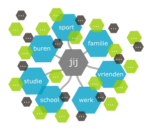

How connected are you? Analyze your social network
Deze vragenlijst heeft als doel om uw netwerk in kaart te brengen en u bewust te maken van de mensen die u kent. Hieraan ten grondslag ligt een theoretische onderbouwing die u de noodzakelijke achtergrond informatie geeft en u in de gelegenheid stelt om de vragen op een juiste manier te beantwoorden. Zodoende ontstaat er een waardevol beeld van uw netwerk. De theoretische onderbouwing is opgesteld door mw. Iris Meerts van Stichting Zelforganisatie, zij is graag bereid u te woord te staan. Voor meer informatie over de achtergrond van deze scan kunt u contact opnemen met Stichting Zelforganisatie via info@z11org.nl en telefoonnummer 0104049444. Na het beantwoorden van deze Netwerk scan van Stichting Zelforganisatie treft u als output een visualisatie aan. De uitkomst hiervan is uitsluitend bedoeld om inzicht te geven in de opbouw van uw netwerk op dit moment en levert dus geen waarde oordeel. Het gaat dus niet om goed of fout. Bij deze Netwerk scan van Stichting Zelforganisatie gaan we niet uit van de groep waarin u zit maar kiezen we voor de rol die u heeft. Bijvoorbeeld: wanneer we kiezen voor groep, dan kunt u zo alle bloedlijnen die u heeft invullen. Echter, wanneer u bijvoorbeeld met uw broer een bedrijf heeft opgericht, kan het zijn dat het zakelijke contact frequenter plaatsvindt dan het familie contact. Dat vinden we dus interessanter om te meten.
 Ter verduidelijking ziet u hier de visualisatie van een voorbeeldnetwerk door middel van een mindmapschema; u staat zelf centraal en om u heen heeft u een diversiteit aan contacten opgebouwd, die u in de verschillende deelnetwerken kunt indelen. U kunt ervoor kiezen om eerst een handmatige schets te maken en dan pas te kiezen voor het digitaal invullen van de Netwerk scan.
De datum van het invullen van De Netwerk scan van Stichting Zelforganisatie een inzage van uw netwerk op dit moment op. Deze scan is een maat om een beeld te krijgen van de sociale verbondenheid van mensen en uw rol hierin. Om inzicht te krijgen in de groei van het netwerk biedt het periodiek invullen van de vragen hiertoe inzicht. Om in beeldspraak uit te leggen: elk moment van invullen levert een foto op, diverse foto's achter elkaar vormen tesamen een film.
Gegevens
Voordat je gegevens kunt invullen of bekijken moet je eerst inloggen.
Wie ben je?
Vul je algemene gegevens in.
| Naam | |
| Leeftijd | |
| Geslacht | |
| Beroep |
Wie ken je?
Vul per deelnetwerk in welke relaties je heb en hoe regelmatig je contact met hen hebt.
| Deelnetwerk | Naam | Frequentie | |
| × | |||
Score
nog niet geimplementeerd...
Netwerk in kaart 
De netwerk visualizatie toont het sociale netwerk van alle deelnemers. De lijn dikte intensiteit (frequentie) van het contact weer, hoe dikker de lijn hoe vaker contact. De lijn kleur geeft het 'deelnetwerk' of de 'rol' waar je iemand van kent. Je kunt zelf de mate van zichtbaarheid aangeven in drie gradaties:
- informatie alleen voor mezelf
- zodra de ander je terug noemt mag deze inzien
- zichtbaar voor iedereen.
Score
Nog niet geimplemeteerd...